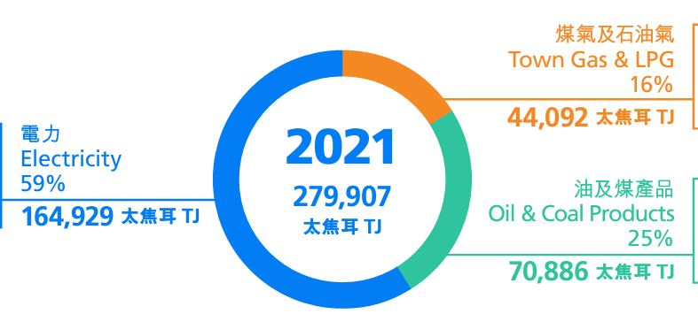
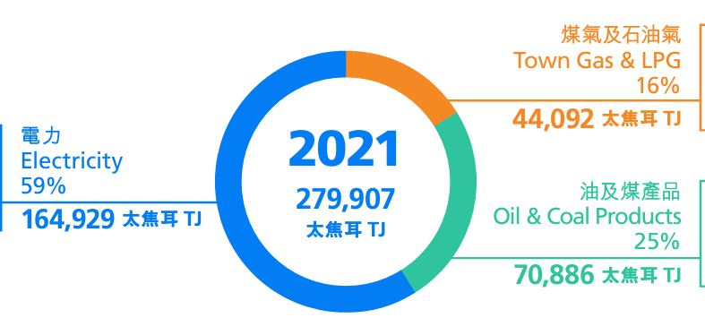
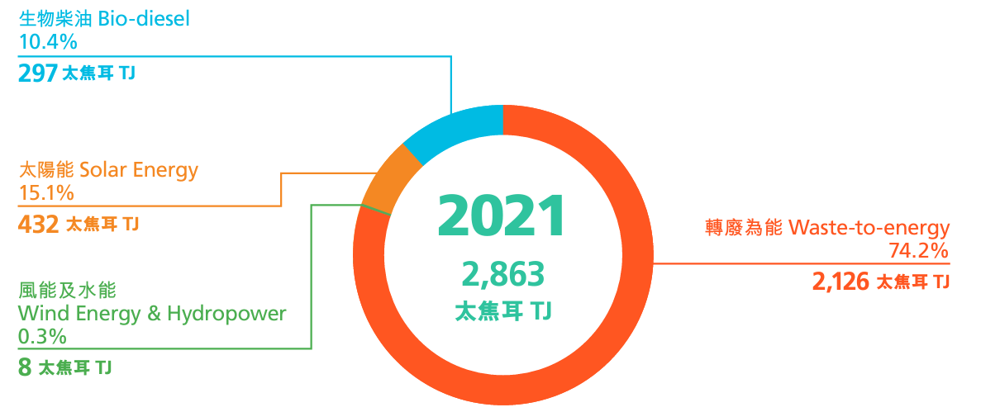
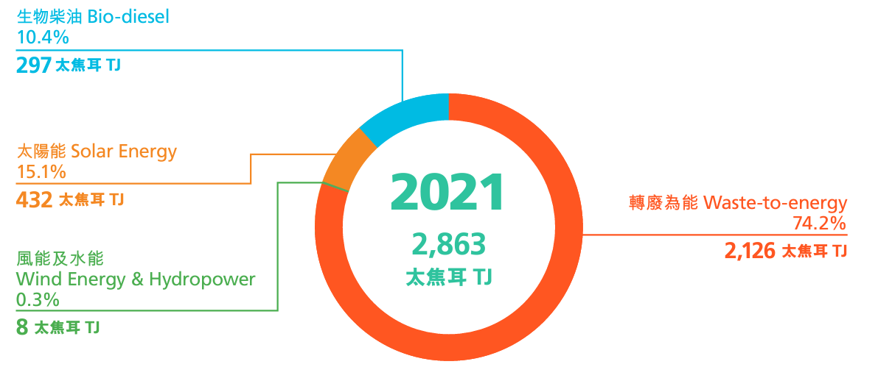

About
*1 Energy Flow Diagram (Hong Kong Energy End-Use Data 2023)
Global warming was a long history issue to raise awareness on the sustainability of cities.
In Hong Kong, eletricity generation contributed the most to carbon emissions.
To reduce the carbon emission, renewable energy becomes one of the energy supply in consideration.

*2 Energy Consumption Mix (Hong Kong Energy End-Use Data 2023)

*2 Energy Consumption Mix (Hong Kong Energy End-Use Data 2023)
Renewable Energy
Renewable energy, which is the "energy that derived from natural processes", is produced in small amount within Hong Kong as indigenous production.
The major types of renewable energy available in Hong Kong are solar energy, wind energy, biogas and biodiesel, where solar energy is commonly used to generate electricity.
In 2021, around 2,863 TJ of renewable energy were produced and consumed by enduses in Hong Kong.

*3 Composition of Renewable Energy in Hong Kong (Hong Kong Energy End-Use Data 2023)
In 2021, around 2,863 TJ of renewable energy were produced and consumed by enduses in Hong Kong.

*3 Composition of Renewable Energy in Hong Kong (Hong Kong Energy End-Use Data 2023)
Solar Energy
Hong Kong is abundant with sunlight, where solar energy can be directly transform into electrical power using photovoltaic panels.
Solar PV is based on the photovoltaic effect, by which a photon (the basic unit of light) impacts a semi-conductor surface like silicon and generates the release of an electron.
More details on Solar Photovoltaic in Hong Kong
Photovoltaic (PV) Panels
Solar PV is based on the photovoltaic effect, by which a photon (the basic unit of light) impacts a semi-conductor surface like silicon and generates the release of an electron.
More details on Solar Photovoltaic in Hong Kong